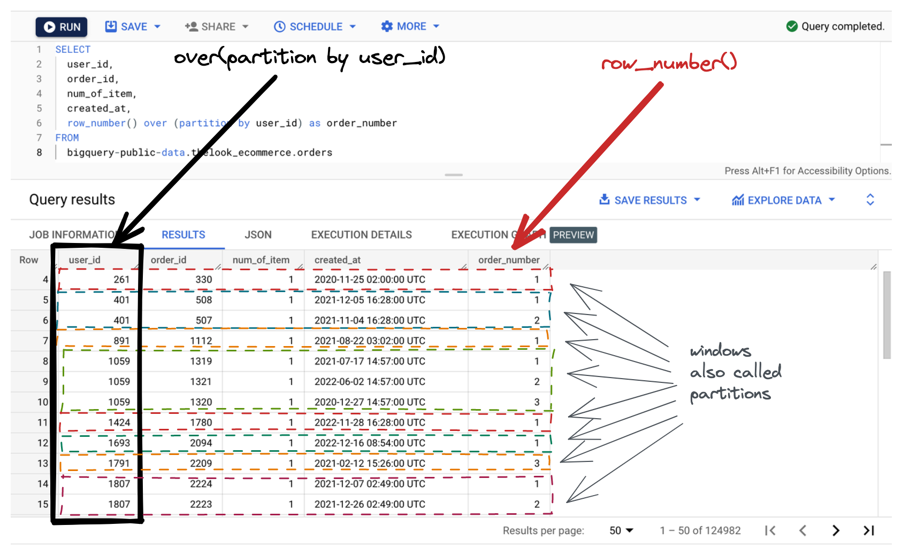

Hi there 👋
It's easy to learn SQL syntax online. Finding resources to practice real-world SQL problem-solving is much more difficult.
Datarefs is a SQL course + reference that focuses on practice. If you read the short lessons and do the carefully paced practice problems, you'll get good at SQL pretty fast.
It's a complete course for data analysis and reporting with SQL. I cover advanced subjects like window functions, user-defined functions, recursive queries, pivot etc. (👉 see table of contents below).

You'll be using Google Standard SQL and the Google BigQuery database. The SQL syntax variations that exist between database engines (BigQuery, Snowflake, Oracle, PostgreSQL, MySQL, Microsoft SQL Server, etc.) are small and easy to pick up.
Thanks to the use of BigQuery, you'll be working with real datasets hosted on Google Cloud. No more contrived, toy-like examples and datasets. Also, nothing to install on your computer. You'll not get stuck trying to make your instructor's pet database work on your machine.
During the lessons and exercises, you'll query 3 main datasets loaded in Google BigQuery: